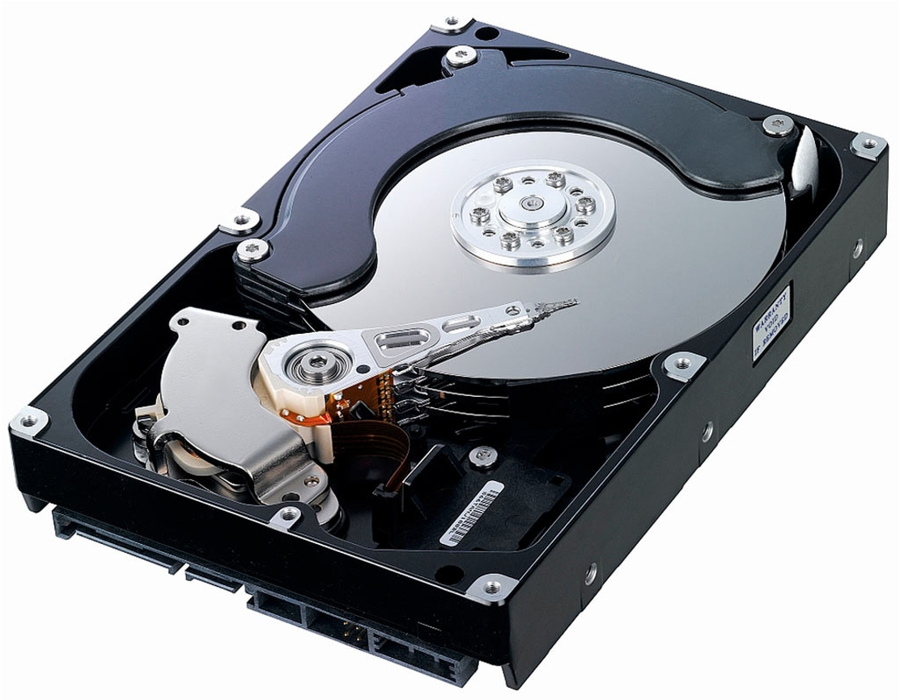
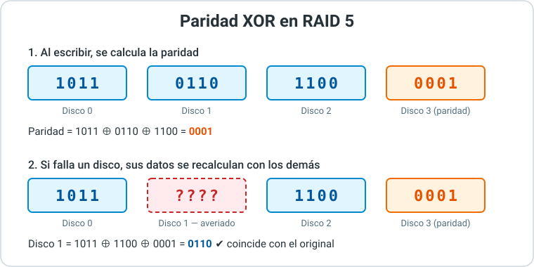
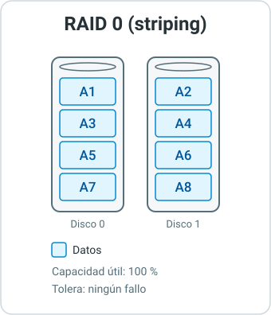
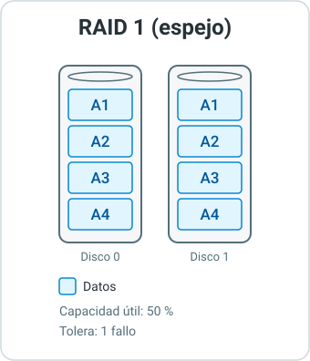
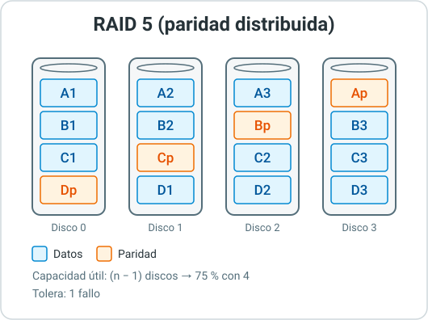
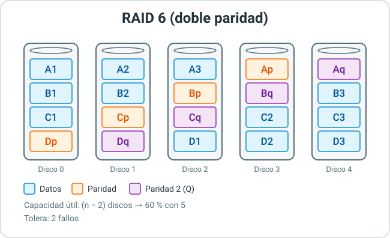
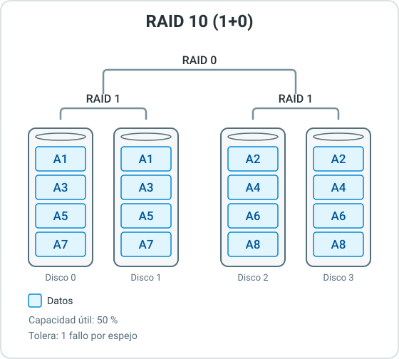
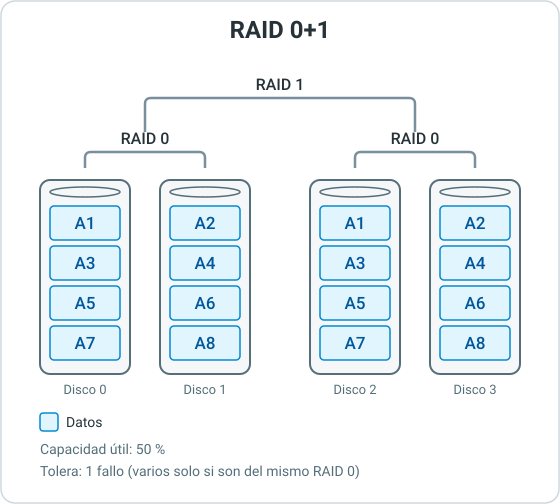
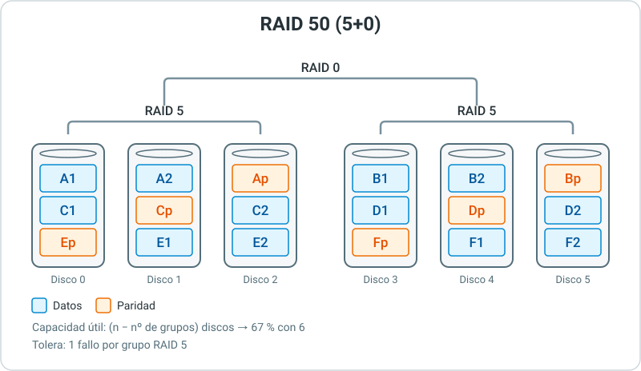

3. Almacenamiento de la Información¶
3.1. Factores del almacenamiento¶
La información de una organización vive en discos, cintas, cabinas o en la nube. Elegir bien dónde y cómo se guarda es una medida de seguridad: un disco que falla sin redundancia ni copia supone perder los datos.
Al diseñar el almacenamiento hay que equilibrar cuatro factores:
| Factor | Qué significa | Ejemplo |
|---|---|---|
| Capacidad | Cantidad de datos que se pueden guardar, ahora y en el futuro. | Un servidor de ficheros que crece 2 TB al año. |
| Rendimiento | Velocidad de lectura y escritura. | Una base de datos necesita SSD; un archivo histórico no. |
| Disponibilidad | Que los datos sigan accesibles aunque falle un componente. | Un RAID sigue funcionando con un disco averiado. |
| Accesibilidad | Tiempo y forma de llegar a los datos: acceso aleatorio o secuencial, local o por red. | Un SSD accede a cualquier dato al instante; una cinta debe avanzar hasta él. |
Mejorar un factor suele empeorar otro o subir el precio. Por eso no existe un almacenamiento "mejor", sino el adecuado para cada uso.
3.2. Medios de almacenamiento¶
Discos duros (HDD)¶
Un HDD (Hard Disk Drive) guarda los datos en platos magnéticos que giran a alta velocidad. Un cabezal montado en un brazo móvil lee y escribe sobre ellos.

Interior de un HDD: platos, brazo y cabezal
- Ventajas: gran capacidad (más de 20 TB) y el menor precio por TB entre los discos.
- Inconvenientes: tiene piezas móviles, así que es sensible a golpes y vibraciones. El acceso aleatorio es lento porque el cabezal tiene que moverse.
- Velocidad de giro (RPM, revoluciones por minuto): 5400 (bajo consumo), 7200 (uso general), 10 000 y 15 000 (servidores, hoy casi sustituidos por SSD).
- Uso típico: almacenamiento masivo, NAS, copias de seguridad.
Unidades de estado sólido (SSD)¶
Un SSD (Solid State Drive) guarda los datos en chips de memoria flash NAND, sin piezas móviles.
- Ventajas: mucho más rápido, sobre todo en acceso aleatorio. Resiste golpes, consume menos y no hace ruido.
- Inconvenientes: más caro por TB y las celdas se desgastan con cada escritura (ver 3.4).
- Uso típico: sistema operativo, bases de datos, máquinas virtuales, portátiles.
Cada celda de memoria puede guardar uno o varios bits. Cuantos más bits por celda, más capacidad y menos precio, pero menos velocidad y durabilidad:
| Tipo | Bits por celda | Durabilidad | Uso típico |
|---|---|---|---|
| SLC | 1 | Muy alta | Industrial, cachés |
| MLC | 2 | Alta | SSD empresariales antiguos |
| TLC | 3 | Media | La mayoría de SSD actuales |
| QLC | 4 | Baja | Gran capacidad, datos que se leen mucho y se escriben poco |
Cintas magnéticas¶
Las cintas guardan los datos de forma secuencial: para leer un dato hay que avanzar la cinta hasta él. El formato estándar en empresas es LTO (Linear Tape-Open); una cinta LTO-9 almacena 18 TB.
- Ventajas: el precio por TB más bajo, duran décadas bien guardadas y, al desconectarlas, quedan fuera del alcance de un ransomware.
- Inconvenientes: acceso muy lento y necesitan una unidad lectora específica.
- Uso típico: copias de seguridad y archivo a largo plazo.
Comparativa¶
| HDD | SSD | Cinta | |
|---|---|---|---|
| Acceso | Aleatorio, lento | Aleatorio, muy rápido | Secuencial |
| Precio por TB | Bajo | Medio-alto | Muy bajo |
| Piezas móviles | Sí | No | Sí (en la unidad) |
| Uso principal | Almacenamiento masivo | Rendimiento | Copias y archivo |
Interfaces¶
La interfaz es la conexión entre el disco y el equipo. Limita la velocidad máxima:
| Interfaz | Velocidad máxima | Uso |
|---|---|---|
| SATA III | 6 Gb/s (≈ 600 MB/s) | HDD y SSD domésticos y NAS |
| SAS (Serial Attached SCSI) | 12 o 24 Gb/s | Servidores: más fiable y admite dos conexiones por disco |
| NVMe sobre PCIe | Varios GB/s (≈ 7 GB/s con PCIe 4.0) | SSD de alto rendimiento |
Gb/s y MB/s
Las interfaces se miden en gigabits por segundo (Gb/s) y los discos en megabytes por segundo (MB/s). Un byte son 8 bits, así que 6 Gb/s equivalen a unos 600 MB/s útiles.
3.3. Capacidad: múltiplos decimales y binarios¶
Los fabricantes miden la capacidad con prefijos decimales (base 10). Los sistemas operativos, como Windows, la calculan en base 2. Por eso un disco "pierde" capacidad al conectarlo.
| Decimal (SI) | Valor | Binario (IEC) | Valor |
|---|---|---|---|
| kilobyte (kB) | 10³ bytes | kibibyte (KiB) | 2¹⁰ = 1024 bytes |
| megabyte (MB) | 10⁶ bytes | mebibyte (MiB) | 2²⁰ bytes |
| gigabyte (GB) | 10⁹ bytes | gibibyte (GiB) | 2³⁰ bytes |
| terabyte (TB) | 10¹² bytes | tebibyte (TiB) | 2⁴⁰ bytes |
| petabyte (PB) | 10¹⁵ bytes | pebibyte (PiB) | 2⁵⁰ bytes |
Un disco de 1 TB
1 TB = 10¹² bytes. Dividido entre 2³⁰ (1 GiB) da ≈ 931 GiB. Windows lo muestra como "931 GB" aunque en realidad son GiB. No falta espacio: es la misma cantidad medida con otra unidad.
Ejercicio 1: Capacidad real de un disco
Compras un disco de 4 TB. ¿Qué capacidad mostrará Windows? ¿Y si son 4 discos de 4 TB en RAID 0?
Solución: Ejercicio 1
4 × 10¹² / 2⁴⁰ ≈ 3,64 TiB, que Windows muestra como "3,63 TB".
En RAID 0 se suma la capacidad de los 4 discos: 16 TB = 16 × 10¹² / 2⁴⁰ ≈ 14,55 TiB.
3.4. Fiabilidad y durabilidad¶
Todos los discos acaban fallando. La pregunta es cuándo y con qué probabilidad.
MTBF y AFR¶
- MTBF (Mean Time Between Failures, tiempo medio entre fallos): horas de funcionamiento que, de media, pasan entre fallos en una población grande de discos. Valores típicos: 1 000 000 h (doméstico) a 2 500 000 h (empresarial).
- AFR (Annualized Failure Rate, tasa anual de fallos): porcentaje de discos que se espera que fallen en un año. Es más fácil de interpretar.
Se pueden relacionar de forma aproximada (un año tiene 8760 horas):
AFR (%) ≈ 8760 / MTBF × 100
Error típico: el MTBF no es la vida del disco
Un MTBF de 1 000 000 h no significa que un disco dure 114 años. Significa que, en un CPD con 1000 discos, se esperan unos 9 fallos al año (AFR ≈ 0,88 %). Además, los datos reales suelen ser peores: los discos que vigila la empresa Backblaze tienen un AFR medio en torno al 1,7 %.
Durabilidad de los SSD¶
Las celdas flash soportan un número limitado de escrituras. Los fabricantes lo indican con:
- TBW (Terabytes Written): total de datos que se pueden escribir durante la garantía. Por ejemplo, 600 TBW en un SSD de 1 TB.
- DWPD (Drive Writes Per Day): cuántas veces al día se puede escribir el disco completo durante la garantía. Los SSD de lectura intensiva tienen DWPD bajo (menos de 1); los de escritura intensiva, alto (3 o más).
Leer una ficha técnica¶
En el trabajo tendrás que elegir discos a partir de su ficha técnica (datasheet).
Ficha de un disco empresarial de 12 TB
| Dato | Valor | Qué nos dice |
|---|---|---|
| Interfaz | SATA 6 Gb/s | Compatible con cualquier NAS o servidor. |
| Velocidad | 7200 RPM | Rendimiento medio-alto para un HDD. |
| Caché | 256 MB | Memoria intermedia que acelera escrituras pequeñas. |
| MTBF | 2 500 000 h | AFR ≈ 0,35 %: gama empresarial. |
| Carga de trabajo | 550 TB/año | Datos que puede leer y escribir al año sin perder garantía. |
| Funcionamiento | 24×7 | Preparado para estar siempre encendido (un disco doméstico no). |
| Garantía | 5 años | El fabricante confía en su duración. |
Ejercicio 2: Fallos esperados
Un CPD tiene 400 discos con un MTBF de 2 000 000 h. ¿Cuál es el AFR? ¿Cuántos discos se espera que fallen al año? ¿Qué conclusión sacas para el almacén de repuestos?
Solución: Ejercicio 2
AFR ≈ 8760 / 2 000 000 × 100 ≈ 0,44 %. Fallos esperados: 400 × 0,0044 ≈ 1,75, unos 2 discos al año.
Conviene tener siempre discos de repuesto (o hot spare, ver 3.6). Además, los datos reales suelen superar la cifra del fabricante, así que es prudente contar con algún fallo más.
3.5. Monitorización SMART¶
SMART (Self-Monitoring, Analysis and Reporting Technology) es un sistema integrado en los discos que registra indicadores de su estado. Sirve para detectar un disco que se está degradando y cambiarlo antes de que falle.
| Atributo | Disco | Qué indica | Alarma |
|---|---|---|---|
| Reallocated Sectors Count | HDD y SSD | Sectores dañados sustituidos por sectores de reserva. | Si es mayor que 0 y crece. |
| Current Pending Sector | HDD | Sectores dudosos pendientes de reasignar. | Cualquier valor mayor que 0. |
| Offline Uncorrectable | HDD | Sectores que no se han podido leer ni corregir. | Cualquier valor mayor que 0. |
| Spin Retry Count | HDD | Reintentos para arrancar el motor. | Cualquier valor mayor que 0. |
| Wear Leveling / Percentage Used | SSD | Desgaste de las celdas flash. | Cerca del 100 % usado. |
| Temperature | HDD y SSD | Temperatura actual. | Por encima de unos 50 °C de forma continuada. |
| Power-On Hours | HDD y SSD | Horas de funcionamiento. | Informativo: edad del disco. |
SMART no avisa siempre
Un estudio de Google con más de 100 000 discos (Failure Trends in a Large Disk Drive Population, 2007) encontró que el 36 % de los discos que fallaron no mostraba ningún error SMART. SMART ayuda, pero no sustituye a la redundancia ni a las copias de seguridad.
Consultar SMART:
Se usa smartctl, del paquete smartmontools:
sudo apt install smartmontools
sudo smartctl -H /dev/sda # resumen: PASSED o FAILED
sudo smartctl -a /dev/sda # todos los atributos
sudo smartctl -a /dev/nvme0 # discos NVMe
El servicio smartd puede vigilar los discos y enviar un correo cuando algo cambia.
La herramienta gráfica más usada es CrystalDiskInfo: muestra el estado ("Bueno", "Precaución", "Malo") y todos los atributos.
Desde PowerShell (como administrador) se puede ver un resumen:
Ejercicio 3: Interpretar SMART
Un servidor muestra estos valores en dos de sus discos. ¿Qué harías con cada uno?
Solución: Ejercicio 3
- Disco A: sano. Lleva unos 3,5 años encendido (31 200 h); conviene vigilarlo y planificar su renovación, pero no hay urgencia.
- Disco B: se está degradando. Tiene 148 sectores reasignados y 8 pendientes. Hay que comprobar que la copia de seguridad está al día y sustituirlo cuanto antes. Si está en un RAID, cambiarlo antes de que falle otro disco.
3.6. RAID: conceptos básicos¶
Un RAID (Redundant Array of Independent Disks) combina varios discos para que el sistema los vea como uno solo. Según el nivel de RAID se consigue más rendimiento, más tolerancia a fallos o ambas cosas.
Se basa en tres técnicas:
- Striping (división en bandas): reparte los datos entre varios discos para leer y escribir en paralelo.
- Mirroring (espejo): escribe los mismos datos en dos o más discos.
- Paridad: guarda un dato calculado que permite reconstruir la información de un disco perdido.
Cómo funciona la paridad¶
La paridad se calcula con la operación XOR (⊕): el resultado es 1 si el número de unos es impar y 0 si es par. Su propiedad clave es que, si se pierde uno de los valores, se puede recalcular con los demás.

RAID por hardware o por software¶
| RAID por hardware | RAID por software | |
|---|---|---|
| Quién lo gestiona | Una controladora RAID (tarjeta dedicada) | El sistema operativo |
| Ejemplos | Controladoras Dell PERC, HPE Smart Array | mdadm y ZFS (Linux), Espacios de almacenamiento (Windows) |
| Ventajas | No consume CPU del servidor; caché con batería | Gratis, flexible, no depende de un modelo de controladora |
| Inconvenientes | Coste; si la controladora falla, hace falta otra compatible | Consume algo de CPU |
Hot swap y hot spare¶
- Hot swap (intercambio en caliente): cambiar un disco averiado sin apagar el servidor.
- Hot spare (disco de reserva): disco instalado pero sin uso que sustituye automáticamente a uno averiado y empieza la reconstrucción sin esperar al técnico. Puede ser local (para un solo RAID) o global (para cualquier RAID del equipo).
3.7. Niveles RAID básicos¶
RAID 0 (striping)¶
Reparte los datos entre los discos sin redundancia.

- Mínimo: 2 discos.
- Ventajas: máximo rendimiento y se aprovecha toda la capacidad.
- Inconvenientes: si falla un disco, se pierden todos los datos. Con más discos, más probabilidad de fallo.
- Uso: datos temporales donde prima la velocidad (edición de vídeo, cachés). Nunca para datos importantes.
RAID 1 (espejo)¶
Escribe los mismos datos en todos los discos.

- Mínimo: 2 discos.
- Ventajas: muy sencillo y fiable; reconstrucción rápida (es una copia directa). Mejora la lectura.
- Inconvenientes: solo se aprovecha el 50 % de la capacidad. No mejora la escritura.
- Uso: disco del sistema operativo en servidores, pequeños servidores.
RAID 5 (paridad distribuida)¶
Reparte datos y paridad entre todos los discos. La paridad cambia de disco en cada banda para no sobrecargar ninguno.

- Mínimo: 3 discos.
- Ventajas: buen equilibrio. Solo se "pierde" un disco de capacidad y tolera un fallo.
- Inconvenientes: escritura más lenta (hay que recalcular la paridad). Durante la reconstrucción, si falla un segundo disco, se pierde todo.
- Uso: servidores de ficheros y NAS con discos de capacidad moderada.
RAID 6 (doble paridad)¶
Como RAID 5, pero con dos bloques de paridad por banda.

- Mínimo: 4 discos.
- Ventajas: tolera el fallo de dos discos a la vez.
- Inconvenientes: escritura aún más lenta y se "pierden" dos discos de capacidad.
- Uso: NAS y cabinas con discos grandes (varios TB), donde la reconstrucción dura muchas horas y el riesgo de un segundo fallo es real.
Comparativa¶
Con n discos de capacidad C:
| Nivel | Mín. discos | Capacidad útil | Fallos tolerados | Lectura | Escritura |
|---|---|---|---|---|---|
| RAID 0 | 2 | n × C | 0 | ⬆⬆ | ⬆⬆ |
| RAID 1 | 2 | C | n − 1 | ⬆ | = |
| RAID 5 | 3 | (n − 1) × C | 1 | ⬆ | ⬇ |
| RAID 6 | 4 | (n − 2) × C | 2 | ⬆ | ⬇⬇ |
| RAID 10 | 4 | n/2 × C | 1 por espejo | ⬆⬆ | ⬆ |
| RAID 50 | 6 | (n − grupos) × C | 1 por grupo | ⬆⬆ | ⬇ |
3.8. RAID anidados¶
Los RAID anidados combinan dos niveles: los discos forman RAID de un nivel y, sobre ellos, se construye un RAID de otro nivel. Se leen de abajo arriba: RAID 10 = RAID 1 abajo y RAID 0 arriba.
RAID 10 (1+0)¶
Se crean parejas en espejo (RAID 1) y se reparten los datos entre ellas (RAID 0).

- Mínimo: 4 discos. Capacidad: 50 %.
- Ventajas: alto rendimiento también en escritura y reconstrucción rápida (solo se copia el espejo afectado). Soporta varios fallos si son de espejos distintos.
- Uso: bases de datos y virtualización.
RAID 0+1¶
Al revés que RAID 10: se crean dos RAID 0 y se ponen en espejo.

Mejor RAID 10 que RAID 0+1
Con los mismos discos y la misma capacidad, RAID 0+1 es más frágil. Al fallar un disco, todo su RAID 0 deja de funcionar. Si después falla cualquier disco del otro lado, se pierden los datos. En RAID 10, en cambio, solo es grave que falle el compañero de espejo. Por eso RAID 0+1 apenas se usa.
RAID 50 (5+0)¶
Se crean varios RAID 5 y se reparten los datos entre ellos con RAID 0.

- Mínimo: 6 discos.
- Ventajas: más rendimiento que un único RAID 5 grande. La reconstrucción solo afecta a un grupo.
- Inconvenientes: si fallan dos discos del mismo grupo, se pierde todo.
- Uso: cabinas con muchos discos.
Ejercicio 4: Capacidad y tolerancia
Tienes 6 discos de 4 TB. Calcula la capacidad útil y los fallos que se toleran en RAID 0, RAID 5, RAID 6, RAID 10 y RAID 50.
Solución: Ejercicio 4
| Nivel | Capacidad útil | Fallos tolerados |
|---|---|---|
| RAID 0 | 6 × 4 = 24 TB | Ninguno |
| RAID 5 | 5 × 4 = 20 TB | 1 |
| RAID 6 | 4 × 4 = 16 TB | 2 cualesquiera |
| RAID 10 | 3 × 4 = 12 TB | 1 seguro; hasta 3 si son de espejos distintos |
| RAID 50 (2 grupos de 3) | 4 × 4 = 16 TB | 1 seguro; 2 si son de grupos distintos |
3.9. Reconstrucción y elección del RAID¶
Reconstrucción¶
Cuando se sustituye un disco averiado, el RAID reconstruye su contenido a partir de los demás discos. Mientras dura:
- El sistema funciona, pero más lento.
- El RAID está degradado: en RAID 1 o RAID 5, un segundo fallo supone perder los datos.
El tiempo mínimo se estima con:
Tiempo ≈ capacidad del disco / velocidad de escritura
Por ejemplo, un disco de 12 TB a 200 MB/s: 12 000 000 MB / 200 MB/s = 60 000 s ≈ 17 horas, como mínimo. Con el servidor en uso y en RAID 5 o 6 (hay que calcular paridad), puede durar días. Por eso, con discos grandes, se prefiere RAID 6 o RAID 10.
Elegir el nivel de RAID¶
| Necesidad | Nivel recomendado |
|---|---|
| Disco del sistema en un servidor | RAID 1 |
| NAS de oficina con 3-4 discos medianos | RAID 5 |
| NAS o cabina con discos grandes (8 TB o más) | RAID 6 |
| Bases de datos, máquinas virtuales | RAID 10 |
| Velocidad máxima con datos que se pueden perder | RAID 0 |
RAID no es una copia de seguridad
RAID protege frente al fallo de un disco. No protege frente a un borrado accidental, un ransomware, un fallo de la controladora o un incendio: esos daños se aplican a la vez en todos los discos. Siempre hacen falta copias de seguridad, que veremos en el apartado 4.
Ejercicio 5: Elegir RAID
Recomienda un nivel de RAID para cada caso y justifica tu respuesta:
- Un estudio de vídeo quiere la máxima velocidad para los ficheros temporales de render. Los originales están en otro servidor.
- Una asesoría compra un NAS de 4 bahías con discos de 16 TB para guardar los documentos de sus clientes.
- Un servidor de base de datos con mucha escritura, en el que el rendimiento es crítico.
Solución: Ejercicio 5
- RAID 0. Prima la velocidad y los datos se pueden regenerar; perderlos no es grave.
- RAID 6. Con discos de 16 TB la reconstrucción dura muchas horas y un RAID 5 quedaría expuesto a un segundo fallo. Se pierde la mitad de la capacidad (32 TB útiles), igual que con RAID 10, pero se toleran dos fallos cualesquiera.
- RAID 10. Es el que mejor rinde en escritura con redundancia y su reconstrucción es rápida.
3.10. Almacenamiento en red¶
Hay tres formas de conectar el almacenamiento a los servidores:
- DAS (Direct Attached Storage): discos conectados directamente a un equipo (internos o por cable SAS/USB). Solo ese equipo los usa.
- NAS (Network Attached Storage): un equipo con discos que comparte ficheros por la red local.
- SAN (Storage Area Network): una red dedicada que conecta los servidores con cabinas de discos. Los servidores ven bloques (discos virtuales) como si fueran discos locales.
flowchart LR
subgraph DAS
S1[Servidor] ---|SATA / SAS| D1[(Discos)]
end
subgraph NAS
PC1[PC] & PC2[PC] --> L1((Red local))
L1 -->|SMB / NFS<br>ficheros| N1[(NAS)]
end
subgraph SAN
PC3[PC] --> L2((Red local)) --> SV1[Servidor] & SV2[Servidor]
SV1 & SV2 ==>|iSCSI / Fibre Channel<br>bloques| SW{{Switch SAN}} ==> CAB[(Cabina)]
end| NAS | SAN | |
|---|---|---|
| Qué ofrece | Ficheros y carpetas compartidas | Bloques: discos virtuales (LUN) |
| Protocolos | SMB (Windows), NFS (Linux) | iSCSI (sobre Ethernet), Fibre Channel |
| Red | La red local normal | Red dedicada, separada de la de usuarios |
| Quién la usa | Usuarios y equipos directamente | Servidores, que luego dan servicio a los usuarios |
| Complejidad y coste | Bajos | Altos |
| Uso típico | Pymes, carpetas compartidas, copias de seguridad | CPD, virtualización, bases de datos críticas |
| Fabricantes | Synology, QNAP, TrueNAS | Dell, HPE, NetApp, IBM, Pure Storage |
LUN
Una LUN (Logical Unit Number) es un disco virtual que la cabina de una SAN presenta a un servidor. El servidor la formatea y la usa como si fuera un disco interno.
Hoy muchas cabinas son unificadas: ofrecen a la vez ficheros (como un NAS) y bloques (como una SAN) desde el mismo equipo.
Ejercicio 6: ¿NAS o SAN?
Indica si usarías DAS, NAS o SAN en cada caso:
- Una clínica dental con 6 empleados que quiere una carpeta común para documentos y radiografías.
- Una empresa con 3 servidores de virtualización que deben compartir los discos de las máquinas virtuales para moverlas de un servidor a otro sin pararlas.
- Un portátil que necesita más espacio para fotos.
Solución: Ejercicio 6
- NAS. Comparte ficheros por SMB, es sencillo de gestionar y barato.
- SAN (iSCSI o Fibre Channel). Los hipervisores necesitan acceso a nivel de bloque a un almacenamiento compartido.
- DAS. Un disco externo USB conectado directamente es suficiente.
3.11. Almacenamiento en la nube¶
En el almacenamiento en la nube los datos se guardan en los CPD de un proveedor y se accede a ellos por Internet. Se paga por uso.
| Tipo | Qué es | Ejemplos |
|---|---|---|
| Objetos | Ficheros con metadatos, accesibles por URL o API. Capacidad casi ilimitada. | Amazon S3, Azure Blob Storage, Google Cloud Storage |
| Bloques | Discos virtuales para máquinas virtuales en la nube (como una SAN). | Amazon EBS, Azure Managed Disks |
| Ficheros | Carpetas compartidas por SMB o NFS (como un NAS). | Amazon EFS, Azure Files |
- Ventajas: crece según se necesita, sin comprar hardware; alta disponibilidad (el proveedor replica los datos) y acceso desde cualquier lugar.
- Inconvenientes: depende de la conexión a Internet; coste mensual que puede dispararse; dependencia del proveedor.
Datos personales en la nube
Si se guardan datos personales, hay que cumplir el RGPD (visto en la UD1): saber en qué país están los datos, firmar un contrato de encargado del tratamiento con el proveedor y protegerlos con cifrado y control de acceso.
3.12. Almacenamiento distribuido y definido por software¶
- Almacenamiento distribuido: los datos se reparten y replican entre muchos servidores, a veces en distintos CPD. Si cae un servidor, los datos siguen disponibles en otros. Así funcionan los servicios en la nube y sistemas como Ceph.
- Almacenamiento definido por software (SDS, Software Defined Storage): el software gestiona la redundancia y el reparto, con discos y servidores estándar en lugar de cabinas propietarias. Ejemplos: Ceph, TrueNAS (basado en ZFS) o Espacios de almacenamiento en Windows Server.
- Infraestructura hiperconvergente (HCI): cada servidor aporta CPU, memoria y discos, y el software une los discos de todos en un almacenamiento compartido. Ejemplos: VMware vSAN, Nutanix, Proxmox con Ceph.
3.13. Prácticas¶
- Investigación de especificaciones de fiabilidad de HDD y SSD
- Fiabilidad de los discos duros según el estudio de Google
- Comprobación del estado SMART de las unidades de disco
Referencias¶
- RAID y S.M.A.R.T. (Wikipedia).
- Red de área de almacenamiento (SAN) (Wikipedia).
- Failure Trends in a Large Disk Drive Population (Google, 2007).
- Backblaze Drive Stats: estadísticas reales de fallos de discos, actualizadas cada trimestre.
- Calculadora RAID de Synology.
- Fiabilidad de discos duros: MTBF y AFR (Seagate).
- smartmontools.